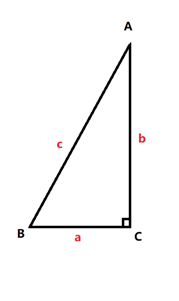

数学常用公式定理1
三角函数公式

基本关系
- $ \sec A = \frac{1}{\cos A} $
- $ \csc A = \frac{1}{\sin A} $
- $ \cot A = \frac{1}{\tan A} $
- $ \sin ^{2}A + \cos ^{2}A = 1 $
- $ \tan ^{2}A + 1 = \sec ^{2}A $
- $ \tan A = \frac{\sin A}{\cos A} $
- $ \cos 2A = \cos ^{2} A - \sin ^{2} A = 1 - 2\sin ^{2} A = 2\cos ^{2} A - 1 $
- $ \sin 2A = 2\sin A \times \cos A $
- $ \csc ^{2} A = \frac{1}{\sin ^{2} A} = \frac{\cos ^{2} A + \sin ^{2} A}{\sin ^{2} A} = \frac{\cos ^{2} A}{\sin ^{2} A} + 1 = \cot ^{2}A + 1 $
- $ \cos (\alpha \pm \beta ) = \cos \alpha \cos \beta \mp \sin \alpha \sin \beta $
- $ \sin (\alpha \pm \beta ) = \sin \alpha \cos \beta \pm \cos \alpha \sin \beta $
基本属性
| 正弦函数 | 余弦函数 | 正切函数 | 余切函数 | |
|---|---|---|---|---|
| 定义域 | $R$ | $R$ | $x不等于k\pi + \frac{\pi}{2} $ | $不等于k\pi $ |
| 值域 | $[-1,1]$ | $[-1,1]$ | $R$ | $R$ |
| 奇偶性 | $奇函数$ | $偶函数$ | $奇函数$ | $奇函数$ |
| 单调性 | $单调递增$ | $单调递减$ | ||
| 周期 | $2\pi$ | $2\pi$ | $\pi$ | $\pi$ |
| $x=0时$ | $0$ | $1$ | $0$ | $无意义$ |
| $x=\frac{\pi}{6}时$ | $\frac{1}{2} $ | $\frac{\sqrt {3}}{2} $ | $\frac{\sqrt {3}}{3} $ | $\sqrt {3} $ |
| $x=\frac{\pi}{4}时$ | $\frac{\sqrt {2}}{2} $ | $\frac{\sqrt {2}}{2} $ | $1$ | $1$ |
| $x=\frac{\pi}{3}时$ | $\frac{\sqrt {3}}{2} $ | $\frac{1}{2} $ | $\sqrt {3} $ | $\frac{\sqrt {3}}{3} $ |
| $x=\frac{\pi}{2}时$ | $1$ | $0$ | $无意义$ | $0$ |
| $x=\pi时$ | $0$ | $-1$ | $0$ | $无意义$ |
| 图像 |  |  |  |  |
和差化积公式
- $\sin \alpha + \sin \beta = 2\sin \frac{\alpha + \beta }{2} \cos \frac{\alpha - \beta }{2} $
- $\sin \alpha - \sin \beta = 2\cos \frac{\alpha + \beta }{2} \sin \frac{\alpha - \beta }{2} $
- $\cos \alpha + \cos \beta = 2\cos \frac{\alpha + \beta }{2} \cos \frac{\alpha - \beta }{2} $
- $\cos \alpha - \cos \beta = -2\sin \frac{\alpha + \beta }{2} \sin \frac{\alpha - \beta }{2} $
- $\tan \alpha + \tan \beta = \frac{\sin \left ( \alpha + \beta \right )}{\cos \alpha \cos \beta } $
- $\tan \alpha - \tan \beta = \frac{\sin \left ( \alpha - \beta \right )}{\cos \alpha \cos \beta } $
- $\cot \alpha + \cot \beta = \frac{\sin \left ( \alpha + \beta \right )}{\sin \alpha \sin \beta } $
- $\cot \alpha - \cot \beta = -\frac{\sin \left ( \alpha - \beta \right )}{\sin \alpha \sin \beta } $
- $\tan \alpha + \cot \beta = \frac{\cos \left ( \alpha - \beta \right )}{\cos \alpha \sin \beta } $
- $\tan \alpha - \cot \beta = -\frac{\cos \left ( \alpha + \beta \right )}{\cos \alpha \sin \beta } $
积化和差公式
- $\sin \alpha \cos \beta = \frac{1}{2} \left [ \sin (\alpha + \beta ) + \sin (\alpha - \beta ) \right]$
- $\cos \alpha \sin \beta = \frac{1}{2} \left [ \sin (\alpha + \beta ) - \sin (\alpha - \beta ) \right]$
- $\cos \alpha \cos \beta = \frac{1}{2} \left [ \cos (\alpha + \beta ) + \cos (\alpha - \beta ) \right]$
- $\sin \alpha \sin \beta = -\frac{1}{2} \left [ \cos (\alpha + \beta ) - \cos (\alpha - \beta ) \right]$
反三角函数
| 反正弦函数 | 反余弦函数 | 反正切函数 | 反余切函数 | |
|---|---|---|---|---|
| 函数式 | $y = \arcsin X$ | $y = \arccos X$ | $y = \arctan X$ | $y = \operatorname{arccot} X$ |
| 定义域 | $[-1,1]$ | $[-1,1]$ | $R$ | $R$ |
| 值域 | $[-\frac{\pi }{2} ,\frac{\pi }{2} ]$ | $[0,\pi]$ | $[-\frac{\pi }{2} ,\frac{\pi }{2} ]$ | $[0,\pi]$ |
| 奇偶性 | $奇函数$ | $非奇非偶$ | $奇函数$ | $非奇非偶$ |
| 图像 |
对数公式
对数恒等式
对数第一恒等式$ \eqref {eq1} $
$ $
\begin{align} \label {eq1}
a^{\log_{a}{N} } & = N
\end{align}
$ $
对数第二恒等式$ \eqref {eq2} $
$ $
\begin{align} \label {eq2}
\log_{a}{a^{b} } & = b
\end{align}
对数推导公式
- $ \log_{a}{(MN)} = \log_{a}{M} + \log_{a}{N} $
- $ \log_{a}{\frac{M}{N} } = \log_{a}{M} - \log_{a}{N} $
- $ \log_{a}{M ^{n} } = n\log_{a}{M} $
- $ \log_{a ^{n}}{M} = \frac{1}{n} \log_{a}{M} $
- $ \frac{\log_{c}{b} }{\log_{c}{a} } = \log_{a}{b} $
- $ \log_{a}{b} = \frac{1}{\log_{b}{a}} $
- $ a^{x} = e^{x\ln_{}{a} } $
极限公式
两个重要极限
第一类重要极限$ \eqref {eq3} $
$ $
\begin{align} \label {eq3}
\lim_{x \to 0} \frac{\sin x}{x} & = 1
\end{align}
$ $
第二类重要极限$ \eqref {eq4} $
$ $
\begin{align} \label {eq4}
\lim_{x \to \infty} (1+\frac{1}{x} )^{x} & = e
\end{align}
$ $
由$ \eqref {eq4} $推导$ \eqref {eq5} $
$ $
\begin{align} \label {eq5}
\lim_{x \to 0} (1+x )^{\frac{1}{x}} & = e
\end{align}
$ $
常见等价无穷小
(当$ x\longrightarrow 0 $时)
- $ \sin x ∽ x $
- $ \tan x ∽ x $
- $ \arcsin x ∽ x $
- $ \arctan x ∽ x $
- $ e^{x} - 1 ∽ x $
- $ a^{x} - 1 ∽ x\ln_{}{a} (a>0,a≠1) $
- $ \ln_{}{(1+x)} ∽ x $
- $ \log_{}{(1+x)} ∽ \frac{1}{\ln_{}{a}} x (a>0,a≠1) $
- $ (1+x)^{a} -1 ∽ ax $
- $ \sqrt[n]{1+x} -1 ∽ \frac{1}{n} x $
- $ 1 - \cos x ∽ \frac{1}{2} x^{2} $
导数和微分公式
导数表达式结构
- $f’(x_{0} ) = \lim_{\Delta x \to 0} \frac{f(x_{0} + \Delta x) - f(x_{0} )}{\Delta x} $
- $f’(x_{0} ) = \lim_{h \to 0} \frac{f(x_{0} + h) - f(x_{0} )}{h} (h = \Delta x)$
- $f’(x_{0} ) = \lim_{x \to x_{0}} \frac{f(x) - f(x_{0} )}{x-x_{0}} (x = x_{0} + \Delta x)$
导数基本公式
- $ C’ = 0(C为常数) $
- $ (x ^{n})’ = nx^{n-1}(n为实数) $
- $ (\log_{a}{x})’ = \frac{1}{x\ln_{}{a}} (a>0,a≠1) $
- $ (\ln_{}{x})’ = \frac{1}{x} $
- $ (a ^{x})’ = a^{x}\ln_{}{a}(a>0,a≠1) $
- $ (e^{x})’ = e^{x} $
- $ (\sin {x})’ = \cos {x} $
- $ (\cos {x})’ = -\sin {x} $
- $ (\tan {x})’ = \frac {1}{\cos ^2 {x}} = \sec ^2 {x} $
- $ (\cot {x})’ = -\frac{1}{\sin ^2 {x}} = -\csc ^2 {x} $
- $ (\sec {x})’ = \sec {x} \tan {x} $
- $ (\csc {x})’ = -\csc {x} \cot {x} $
- $ (\arcsin {x})’ = \frac {1}{\sqrt{1- x^2}} $
- $ (\arccos {x})’ = -\frac {1}{\sqrt{1- x^2}} $
- $ (\arctan {x})’ = \frac {1}{1+x^2} $
- $ (\operatorname{arccot} x)’ = -\frac {1}{1+x^2} $
微分基本公式
- $ dC = 0(C为常数) $
- $ d(x ^{n}) = nx^{n-1}dx(n为实数) $
- $ d(\log_{a}{x}) = \frac{1}{x\ln_{}{a}}dx (a>0,a≠1) $
- $ d(\ln_{}{x}) = \frac{1}{x}dx $
- $ d(a ^{x}) = a^{x}\ln_{}{a}dx(a>0,a≠1) $
- $ d(e^{x}) = e^{x}dx $
- $ d(\sin {x}) = \cos {x}dx $
- $ d(\cos {x}) = \sin {x}dx $
- $ d(\tan {x}) = \frac {1}{\cos ^2 {x}}dx = \sec ^2 {x}dx $
- $ d(\cot {x}) = -\frac{1}{\sin ^2 {x}}dx = -\csc ^2 {x}dx $
- $ d(\sec {x}) = \sec {x} \tan {x}dx $
- $ d(\csc {x}) = -\csc {x} \cot {x}dx $
- $ d(\arcsin {x}) = \frac {1}{\sqrt{1- x^2}}dx $
- $ d(\arccos {x}) = -\frac {1}{\sqrt{1- x^2}}dx $
- $ d(\arctan {x}) = \frac {1}{1+x^2}dx $
- $ d(\operatorname{arccot} x) = -\frac {1}{1+x^2}dx $
导数四则运算法则
$
[u(x) \pm v(x)]’ = u’(x) \pm v’(x)
$
$
[u(x)v(x)]’ = u’(x)v(x) + u(x)v’(x)
$
$
[Cu(x)]’ = Cu’(x)(C为常数)
$
$
[\frac {u(x)}{v(x)}]’ = \frac {u’(x)v(x) - u(x)v’(x)}{v^2(x)}(v(x)≠0)
$
$
[\frac {C}{v(x)}]’ = -\frac {Cv’(x)}{v^2(x)}(v(x)≠0,C为常数)
$
微分四则运算法则
设u = u(v)、v = v(x)可微，则
$ $
\begin{align}
d(u \pm v) = du \pm dv
\end{align}
$ $
$ $
\begin{align}
d(Cu) = Cdu(C为常数)
\end{align}
$ $
$ $
\begin{align}
d(uv) = vdu + udv
\end{align}
$ $
$ $
\begin{align}
d(\frac {u}{v}) = \frac {vdu - udv}{v^2}(v≠0)
\end{align}
$ $
常用n阶导数公式
- $ (e^x)^{(n)} = e^x $
- $ (a^x)^{(n)} = a^x · \ln^n_{\,}{b} $
- $ (\sin {x}) ^{(n)} = \sin {(x + n · \frac {\pi}{2})} $
- $ (\cos {x}) ^{(n)} = \cos {(x + n · \frac {\pi}{2})} $
- $ (x ^n)^{(n)} = n! $
- $ (x^m)^{(n)} = 0(正整数m<n) $
- $ (x^m)^{(n)} = \frac {m!}{(m-n)!} x^{m-n}(正整数m>n) $
- $ (\frac {1}{x+a})^{(n)} = \frac {(-1)^n n!}{(x+a)^{n+1}} $
- $ [(\ln_{}{(x+a)}]^{(n)} = (-1)^{n-1}\frac {(n-1)!}{(x+a)^n} $
切线与法线方程
| 函数$f(x)$在点$(x_{0},f(x_{0}))$处的切线与法线方程 | $ \left\{\begin{matrix} (1).若f'(x_{0})≠0且f'(x_0)≠\infty ，\\ 切线方程为y-f(x_0) = f'(x_0)(x-x_0)，\\ 法线方程为y-f(x_0) = -\frac{1}{f'(x_0)}(x-x_0);\\ (2).若f'(x_{0})=0,切线方程为y=f(x_0),\\ 法线方程为x=x_0;\\ (3).若f'(x_{0})=\infty,切线方程为x=x_0,\\法线方程为y=f(x_0) \end{matrix}\right. $ |